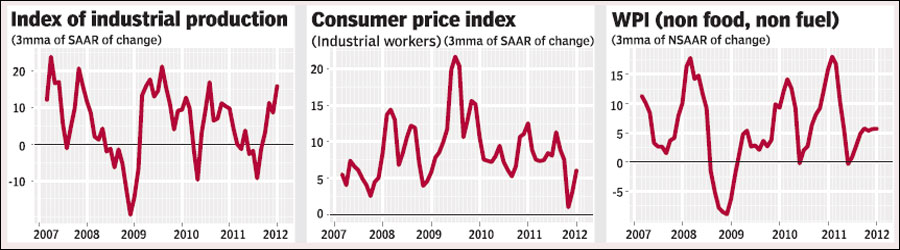

What was RBI thinking?
Financial Express, 24 April 2012
Was the 50 basis point rate cut by RBI prompted by RBI's judgement that the risk of inflation is lower, or was it a case of succumbing to political pressure? A careful reading of the credit policy, and even more so, of the report on Macroeconomic and Monetary Developments (MMD) released with the credit policy statement points to a serious discrepancy between RBI's action and its views on output and prices.
 The MMD normally provides RBI's assessment of the economy and is seen to contain the rationale for the policy actions it takes. If one only read the analysis and did not know the action taken, one would easily have drawn the conclusion that RBI would hike interest rates, instead of cutting them.
RBI's growth projection says that while output slowed down in 2011-12, it may have bottomed out in Q3 of 2011-12 and is expected to gradually recover in 2012-13. This projection is based on indicators such as non-food credit offtake, cement production and RBI's service sector composite indicator. Similarly, it says that investment showed a marked increase in Q4 2011-12, and validates the argument that growth bottomed out in Q3.
Figure 1 shows the 3-month moving average of the seasonally-adjusted index of industrial production. This is clearly not an indicator most of us believe in after the data errors that are coming to be known. Yet, as one of the indicators we have, we can see that it is looking reasonably healthy in the latest few months, suggesting that in coming months the headline year on year growth numbers will look better. Similarly, as RBI remarks, the sales growth of corporate India tells a story different from that of recession. Sales growth for the quarter ending December 2011 for which data is available was at 20%. Even if nominal prices are rising at 10%, this is still a reasonable growth figure.
At the same time, RBI is much more pessimistic about inflation. The MMD argues that in 2012-13 inflation is likely to remain around current levels, which is above RBI's comfort zone. It had dipped slightly due to food inflation but is now back up. Further, it argues that in the near term inflation is subject to significant upside risks, in particular from high oil prices and unsustainable levels of suppressed inflation, the lagged pass-through impact of rupee depreciation, higher freight rates and taxes, sustained wage pressures, and the structural nature of protein-food inflation.
RBI argues that stronger price pressures in services included in the CPI basket point to the persistence of generalised inflation. This is also reflected in the all-India CPI excluding food and fuel inflation which is high at 10.1%, as compared to the WPI excluding food and fuel inflation of 7.0% for February 2012. Wages are rising, and inflationary expectations are high.
Figure 2 shows the 3-month moving average of the seasonally-adjusted consumer price index for industrial workers. This shows an upward movement at the end. This indicates that in coming months CPI inflation will show higher year-on-year growth as suspected by RBI.
Figure 3 shows the 3-month moving average of non-food, non-fuel WPI inflation. This series, often termed as core inflation by RBI, is the series which shows the impact of monetary policy. Core inflation is also showing an upward trend in latest months. This would be a source of worry for RBI as rising core inflation indicates inflationary pressure in the economy.
In RBI's view the biggest threat to investment and growth today is inflation. The MMD, released one day before the credit policy announcement, says, "Reigning in inflation through tight monetary policy assumes importance in promoting sustainable growth and investment, even if it results in high cost of capital in the short run."
After presenting the above arguments and evidence, the takeaway for the reader is that RBI believes that inflation continues to be a problem, and that RBI can help growth more by offering a lower inflationary environment, rather than by cutting interest rates. Yet, the decision of RBI was to cut rates by more than expected.
It would be interesting to see the minutes of the Technical Advisory Committee on monetary policy committee held to take the decision about interest rates before the policy announcement. If RBI's views and what it says in the MMD before the policy are to be of any significance, it is necessary that the committee is given more than an advisory role, it is given an executive status and the voting in the committee, as well as its detailed minutes are made public as is done by other central banks with functional monetary policy committees.
Central banks have been given independence in many countries. The reason for this is so that governments, who are often seen to have short-time horizons, usually the next election, are unable to influence decisions that my cause harm in the long run. Making the monetary policy committee a transparent, executive body will help RBI acquire greater independence and pursue this objective of price stability better.
Back up to Ila Patnaik's media page
Back up to Ila Patnaik's home page